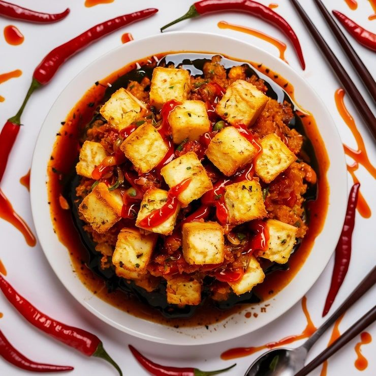

Home
Chilli Paneer

Chilli Paneer is a popular Indo-Chinese dish made with
crispy paneer cubes tossed in spicy sauces and fresh
vegetables. It is perfect as a starter or side dish.
Recipe Information
- Preparation Time: 15 minutes
- Cooking Time: 20 minutes
- Total Time: 35 minutes
- Servings: 2 people
- Difficulty: Medium
Ingredients
- 200 grams paneer, cubed
- 2 tablespoons cornflour
- 1 onion, cubed
- 1 capsicum, cubed
- 1 tablespoon soy sauce
- 1 tablespoon red chilli sauce
- 1 tablespoon tomato ketchup
- 1 teaspoon ginger-garlic paste
- 2 tablespoons cooking oil
- Salt and black pepper to taste
- Spring onions for garnishing
Instructions
- Prepare the paneer: Coat paneer cubes lightly with cornflour.
- Fry the paneer: Heat oil in a pan and shallow-fry the paneer until golden.
- Cook the vegetables: Add onion and capsicum and stir-fry for 2 minutes.
- Add aromatics: Add ginger-garlic paste and sauté briefly.
- Prepare the sauce: Add soy sauce, chilli sauce, ketchup, salt, and pepper.
- Combine: Add paneer and toss gently until coated with the sauce.
- Garnish and serve: Sprinkle spring onions and serve hot.
Serving Suggestions
Serve Chilli Paneer with fried rice, noodles, or as a starter.
Tips for Perfect Chilli Paneer
- Use firm paneer so the cubes retain their shape.
- Cook vegetables on high heat to keep them crunchy.
- Add a little water if you prefer a saucier dish.
Enjoy Your Homemade Chilli Paneer!
Spicy, tangy, and delicious Chilli Paneer is ready to serve.